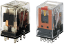
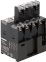
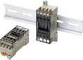
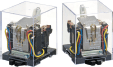
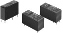
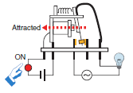
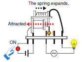
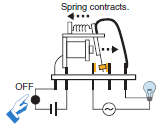

General Purpose Relays
OMRON provides General-purpose Relays, I/O Relays, Power Relays, Latching Relays, and Ratchet Relays.
| Introduction | Features |
|
|
|
| Engineering Data |
|
|
|
|
-
 What Is a Relay?
What Is a Relay?
-
Applications for Relays
-
Types of Relays
-
Structure and Operating Principle
-
Product Lineup
What Is a Relay?
Basically, a Relay is a device with contacts that opens and closes a switch as the result of an input signal (voltage or current) applied to a coil
Applications for Relays
Relays are widely used in most machines and devices that use electricity.
Types of Relays
There are mainly two types of relays: mechanical relays and solid state relays.
OMRON calls mechanical relays “General-purpose Relays.”
* For details on SSRs, refer to the Technical Explanation for Solid State Relays.
There are various types of mechanical relays (General-purpose Relays).
Hinged relays use the most common structure.
Hinged Relays
With hinged relays, the armature of the electromagnet rotates around a fulcrum. This action directly or indirectoly opens and closes a contact.
OMRON classified relays with contacts (General-purpose Relays) according to applications as shown in the following table.
| Type | Points | Typical Relays | |
| Relays for control panels ・ Control Relays ・ I/O Relays ・ Latching Relays, etc | Relays with 1 to 4 poles are mainly used for relay sequences or I/O applications. | MM(K), MK(S), MY, LY, G2R(S), G2RV, G7T, etc. |  |
| Built-in relays ・ High -capacity Relays, etc. | Built-in relays enable using a carry current of up to 40 A and are used for building into devices, e.g., to turn ON load power supplies. | G7Z, G7J, G7X, etc. |  |
| Work-saving relays ・ Terminal Relays ・ Relay Terminals, etc. | Work-saving relays are available in relay units and are used mainly for I/O applications for programmable controllers when downsizing and saving work are required. | G6D-F4B, G6B-4BND, etc. |  |
| Relays for special operations ・ Ratchet Relays, etc. | Relays for special operations are available as relays or relay units that are specified for a specific applications, such as alternative operation and stepping operation of pumps . | G4Q, G9B, MYA, etc. |  |
| Relays for PCBs | These specialized relays are mounted on PCBs. | G5NB, G2RL, etc. |  |
Structure and Operating Principle
General-purpose Relays transfer signals through a mechanical action.
A hinged relay is shown below as an example.
Hinged relays switch contacts by the rotating movement of an armature around a fulcrum.
Example: NO contacts (make contacts)
 | 1. The input device (switch) is turned ON. 2. A current flows to the magnet (coil) to magnetize the core. 3. Magnetism causes the armature to be attracted to the core. |
 | 4. When the armature is attracted to the core, the moving contact touches the fixed contact and the lamp lights. Note: At this time, the release spring is stretched out. |
 | 5. The input device (switch) is turned OFF. 6. The current to the magnetic (coil) is cut off, the force of attraction is lost, and the force of the release spring returns the armature to its original position. 7. When the armature returns to its original position, the contacts separate and the lamp turns OFF. |
Application Examples:
Latching Relays (Also Called Bistable Relays or Keep Relays)
Magnetic Latching Relays: Two-coil Latching Relays
Relaxed State (after Reset)
Battery Not Connected to Coil
The diagram shows the relay in the relaxed state.
These relays are the same as the hinged relays described previously except that the core, yoke, and armature are made from semi-hard magnetic material and there are at least two coils in the relay.
Operating State (Set)
When current flows through coil A, the electromagnet (made of semi-hard material) is magnetized and the armature is attracted to the core.
As a result, the moving contact moves away from the normally closed (NC) contact (turns OFF) and makes contact with the normally open (NO) contact (turns ON).
In the set state, the residual magnetic flux in the semi-hard magnetic material (material that has properties similar to a permanent magnet) will keep the armature attracted to the core even if a current is no longer applied to coil A.
Release State (Reset) → Relaxed State
If a current is applied to coil B, which is wound in the opposite direction to coil A, the residual magnetic flux in the semi-hard magnetic material will be reduced and the magnetic attraction will weaken. The power of the release spring will become stronger than the magnetic attraction, so the armature will release and the relay will be in the relaxed state.
When the armature has released, there will be almost no residual magnetic flux in the semi-hard magnetic material.
Note:
In contrast to the hard magnetic material used in a permanent magnet, semi-hard magnetic material requires less energy to magnetize and de-magnetize.
Product Lineup
OMRON has a wide variety of General-purpose Relays so that you can select a relay that is suitable to the application.
Types of Relays (Typical Examples)
Types of Square Sockets (Typical Examples)
*Round Sockets are also available.